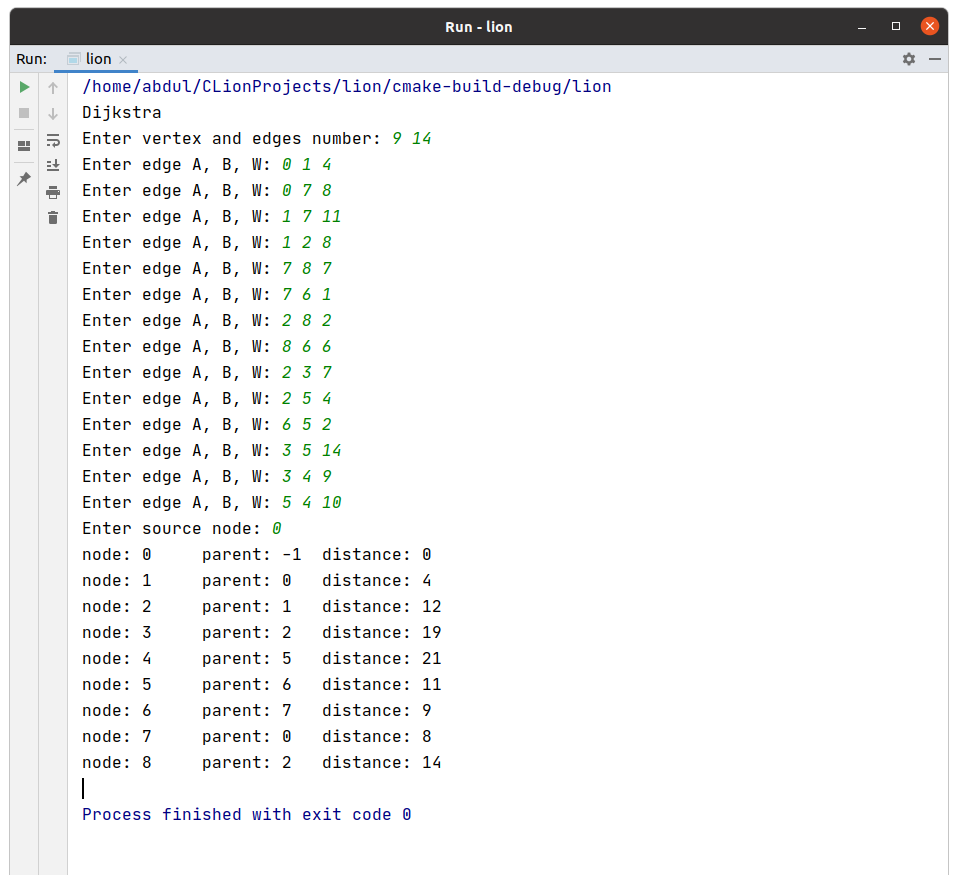

NB: this site is developed only for educational purpose and sharing developer's idea.
- Do not get into superiority complex
- Do not get over excited
- Do not get distracted
- Keep continuity
- Bonjour
Amazing grace
dfs
vector <int> adjacent[1000];
bool visited[1000];
void dfs(int node);
int main() {
/*
dfs
recursively visit from root node to its child.
if child visited, return to parent
find another child from adjacency stack
used to check if a graph is connected
or to find a node in a graph
time complexity O(V+E)
dfs is faster than bfs
*/
memset(visited , false, sizeof(visited));
int vertices, edges;
printf("Enter vertices and edges:");
scanf("%d %d",&vertices, &edges);
for (int i = 0; i < edges; i++) {
printf("Enter edges between a and b node:");
int a, b;
scanf("%d %d",&a, &b);
adjacent[a].push_back(b);
adjacent[b].push_back(a);
}
dfs(0);
return 0;
}
concept
void dfs(int node)
{
if (visited[node] == true)
return;
// not visited
visited[node] = true;
printf("%d ",node);
while (!adjacent[node].empty())
{
int child = adjacent[node].back(); // stack property
adjacent[node].pop_back();
// go from deep to deeper and check if child visited
dfs(child);
}
}
bfs
//void bfs(int node);
int counter;
vector<int> adjacent[1000];
bool visited[1000];
list<int> que;
// bfs is not recursive algorithm
void bfs(int node)
{
/*
push starting node into que
and the game begin
(front)------------->-----------------|
| | \|/
| | | |
| | | |
| | |
| | |
| | |
| ^ ^ | |
| | make | | |
| visited | | adjacent(front) |
starting node-----| |---------------------------|
*/
// starting node
que.push_back(node);
visited[node] = true;
while (!que.empty())
{
int front = que.front();
que.pop_front();
printf("%d ",front);
for (int i = 0; i < adjacent[front].size(); ++i) {
int child = adjacent[front][i];
if(visited[child] != true)
{
visited[child] = true;
que.push_back(child);
}
}
}
}
concept
int main() {
/*
bfs
can't done recursive
*/
memset(adjacent, 0, sizeof(adjacent));
memset(visited, false, sizeof(visited));
que.clear();
int vertices, edges;
printf("Enter vertices and edgs:");
scanf("%d %d",&vertices, &edges);
for (int i = 0; i < edges; ++i) {
printf("Enter a edge b:");
int a,b;
scanf("%d %d",&a, &b);
adjacent[a].push_back(b);
adjacent[b].push_back(a);
}
// starting node 0
bfs(0);
return 0;
}
Happy Dijkstra Day
Algorithm
Initialize-Single-Source(G, s)
{
for each vartex v -> G.V
v.distance = infinity
v.parent = NIL = -1
s.distance = 0 // only source parent 0 others null
}
Relax(u, v, w)
{
if v.distance > u.distance + w(u,v)
v.distance = u.distance + w(u,v)
v.parent = u
}
Dijkstra(G, w, s)
{
Initialize-Single-Source(G, s)
S = NIL ( initially shorted path tree=null )
Q = G.V ( min priority queue Q
while Q != empty keyed by vertex.distance value )
u = Extract-Min(Q)
S = S (UNION) u
for each vertex v --> adjacent(u)
Relax(u, v, w)
}
coding approach
class node{
public:
int parent;
int distance;
bool completed;
node()
{
this->distance = INT_MAX;
this->parent = -1;
this->completed = false; // completed = true mean
} // this node been added
// to shorted path tree
// node weight
vector<pair<int, int>> adjacent;
};
/*
* here u-node already belong to shorted path tree
* it has the lowest possible distance from source
* we will enlighten all his adjacent vartex v through him
Relax(u, v, w)
{
if v.distance > u.distance + w(u,v)
v.distance = u.distance + w(u,v)
v.parent = u
}
*/
void Relax(int u, int v, int w)
{
if (G[v].distance > G[u].distance + w) // u-node already sorted
{
G[v].distance = G[u].distance + w;
G[v].parent = u;
}
}
// min priority queue keyed by vartex.distance value
int Extract_min()
{
int min = INT_MAX;
int index;
for (int i = 0; i < G.size(); ++i) {
if (G[i].completed == false && G[i].distance < min)
{
index = i;
min = G[i].distance;
}
}
// all node has been processed
if (min == INT_MAX)
index = -1;
/*
if index == -1
min priority queue empty
terminate dijkstra
*/
return index;
}
Before

concept
vector<node> G;
int main() {
printf("Dijkstra\nEnter vertex and edges number: ");
int vartex, edges;
scanf("%d %d",&vartex, &edges);
// Initialize-single-source
for (int i = 0; i < vartex; ++i) {
G.push_back(node());
}
for (int i = 0; i < edges; ++i) {
printf("Enter edge A, B, W: ");
int a, b, w; // two node and their weight
scanf("%d %d %d",&a, &b, &w);
G[a].adjacent.push_back({b, w});
G[b].adjacent.push_back({a, w});
}
printf("Enter source node: ");
int src; scanf("%d",&src);
G[src].distance = 0;
while (true)
{
int u = Extract_min();
if (u == -1) break;
G[u].completed = true;
for (int i = 0; i < G[u].adjacent.size(); ++i) {
int v = G[u].adjacent[i].first; // pair<b, weight>
int w = G[u].adjacent[i].second;
Relax(u, v, w);
}
}
for (int i = 0; i < G.size(); ++i) {
printf("node: %d \tparent: %d \tdistance: %d\n",
i, G[i].parent, G[i].distance);
}
return 0;
}

After